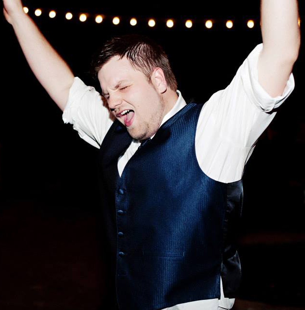

Quick Facts (TLDR)
- Born David Helmken on September 18
- Graduated from The Ohio State University, 2009
- Determined to make CS:GO a better community through positive energy and teaching
- Has played Counter-Strike for over 10 years
- Lumi has 2 siblings, an older brother and younger sister
- Lumi lives in Cincinnati, but has also lived in Columbus and Chicago
- Outside of CS:GO, Lumi can sometimes be found adventuring through Tamriel
- He has a tattoo of two dragons
More on Lumi and his CS OutCrowd
Lumi is a veteran CS player. He started in 1.6, and has played semi-pro in CAL, Intermediate and Main. He is currently looking for a team to continue playing comeptitively in the future. He LOVES CS:GO, and enjoys the opportunity to help and share some of his knowledge and skills with other players.
When Lumi isn't streaming, or helping players up their game, he can be found working on his masters of business at Full Sail University, or at the gym playing raquetball. He enjoys spending time with his family and friends. He is interested in game economics and has hopes to work with Valve in the future in that field.
Lumi's Rig
- CPU: Intel(R) Core i7-4790K @ 4.0GHz
- MOBO: Asrock Z97 Extreme 4
- RAM: 16GB DDR3 Corsair RAM
- GPU: AMD Radeon HD 7970
- HDD: 128GB Western Digital SSD (OS) & 1TB 7,200RPM
- Mouse: Logitech G300 Mouse
- Headset: Plantronics Audio-90's
- Voice: Logitech Standalone Microphone